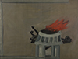

모두가 웃는 웹 'web for all' 본사이트는 서울시립미술관 커미션으로 제작한 정혜윤의 작업입니다.
모두가 웃는 웹(web for all)
-
송현숙 불타는 집
작품 정보
- 제작연도
- 1983
- 재료/기법
- 캔버스에 템페라
- 작품규격
- 118.7×158cm
- 액자규격
- 124×163.2cm
- 부문
- 회화
- 관리번호
- 2001-66
- 전시상태
- 전시중
작가 및 작품설명
송현숙(1952- )은 1981년 독일 함부르크 조형예술대학교(Hochschule fur bildende kunste Hamburg) 회화과를 졸업하였고 1984-85년 전남대학교에서 동양화와 한국미술사를 연구했으며 현재 독일에 거주하며 작업하고 있다. 1982년 《내 마음은 조롱박》(함부르크미술관, Kunsthalle Hamburg, 함부르크, 독일), 1988년 《불타는 집(The Firehouse)》(베른미술관, Bern Kunstmuseum, 베른, 스위스), 1996년 《에드빈샤르트 예술상 수상 초대전(Edwin Scharff Prize Exhibition)》(함부르크미술관, Herzhorn Kunsthaus Hamburg, 함부르크, 독일/금호미술관, 서울), 2008년과 2014년 《Breath and brushstrokes》(학고재, 서울), 2018년 《송현숙: 7획(HYUN-SOOK SONG: 7 Brushstrokes)》(제노X갤러리, 앤트워프, 벨기에) 등의 개인전을 개최했다. 1982년 《눈 속의 가시(Thorn in the Eye)》(함부르크 미술주간, Hamburger Kunstwoche 함부르크, 독일), 1993년 《폭력과 인종차별에 반대하여(Against Violence and Racism)》(함바허 성(成), HambacherSchloss, 노이슈타트안데어바인슈트라세, 독일), 1998년 《폭력과 상처》(이타바시 미술관, 도쿄, 일본), 2010년 《정신으로서의 선, 그 힘》(이응노미술관, 대전), 2012년 《그리움, 동아시아현대미술》(상하이현대미술관, MoCA, 상해, 중국), 2014년 《코리안 뷰티: 두 개의 자연》(국립현대미술관, 과천) 등의 단체전에 참가하였다. 1983년 독일 연방 산업협회가 수여하는 회화미술 장려상, 1995년 독일 헤센 주 영화상, 1996년 함부르크 에드빈샤르프 예술상 등을 수상했다.
송현숙은 1972년부터 4년 동안 독일에서 파독 간호원으로 근무한 이후 1976년 미술대학에 진학하면서 작가로 전업하였다. 타지에서 겪은 고난과 한국에 대한 향수병을 그림으로 달래 왔다는 작가는 1992년부터 <획(Brushstroke)> 시리즈를 꾸준히 전개하였다. 단 몇 번의 획만으로 사물을 그리는 이 작업은 화면 위에 그린 획 수가 곧 작품의 제목이 된다. 주재료는 달걀과 안료를 혼합해 안료가 마르기 전에 빠르게 그림을 그리는 서양의 전통 재료인 템페라이지만, 한국의 전통 붓인 ‘귀얄붓’으로 형상을 그린다는 점에서 동서양의 전통 요소들을 혼합했다는 평가를 받는다. 형식상 추상의 어법을 따름에도 불구하고, 옅은 녹갈색이나 검정색 바탕 위에 그려진 형상은 그녀의 자전적인 이야기 뿐 아니라 토착적이고 무속적인 한국의 전통문화를 내포하고 있다. 즉 추상과 구상의 특징을 모두 갖고 있는 셈인데, 간결하지만 강한 운필에는 1970년대 일찍이 이산을 경험한 자로서 고국에 대한 그리움, 어머니와의 추억, 불의의 사고로 죽은 오빠에 대한 애도, 독일에서 광주민주화운동 등 한국의 소식을 접하면서 경험한 아픔과 저항의 정신 등이 담겨있다. 이러한 맥락은 송현숙이 직접 제작한 세 편의 자전적 기록영화 <내 마음은 조롱박>(1995), <회귀>(1996), <내 집은 어디에>(2003)에서도 이어지며, 그녀의 회화작업을 확장된 시각에서 해석할 수 있는 기초를 제공한다.
<불타는 집>(1983)은 시기상 초기작으로 분류되지만, 근작과 기법 뿐 아니라 개념적으로 연결된다는 점에서 중요하다. 황토빛 회색의 색면에 서양의 전통 방식인 템페라 기법으로 그려진 형상은 몇 번의 붓질로만 그려져 있어 이후 전개한 <획> 시리즈의 원형이 발견된다. 송현숙은 이 작업에 대해 “1982년 말에 처음으로 시골 부모님을 여동생이 모시고 독일을 방문하셨습니다. 그때부터 제가 유학준비와 일을 하면서 한국과 단절됐었다는 사실을 자각하게 됐습니다. 더불어 1980년대 당시 한국에도 사회적으로 많은 변화가 있었다는 것을 부모님의 방문과 수많은 편지를 통해 알고 있었기 때문에 이에 대한 내면이 작업에 반영되었습니다.”라고 회고한다. 이처럼 불에 타고 있는 기와집 대문은 당시 약 10년간 단 한 번도 고국의 땅을 밟지 못했던 이방인이자 한국인으로서의 작가의 내면을 투영하고 있다. * 작품이미지를 무단 복제 또는 상업적으로 활용하실 수 없으며, 무단으로 사용하실 경우 저작권법에 따라 처벌 받으실 수 있습니다.공지사항
-
- 제목
- LOADING
- -
오시는길
-
- 서소문본관
- 서울 중구 덕수궁길 61 (서소문동)
-
- 북서울미술관
- 서울 노원구 동일로 1238 (중계동)
-
- 남서울미술관
- 서울 관악구 남부순환로 2076 (남현동)
-
- 난지미술창작스튜디오
- 서울 마포구 하늘공원로 108-1 (상암동)
-
- SeMA창고
- 서울 은평구 통일로 684 (서울혁신파크 5동)
-
- 백남준기념관
- 서울 종로구 종로53길 12-1 (창신동)
-
- SeMA벙커
- 서울 영등포구 여의대로 지하 76 (여의도동)